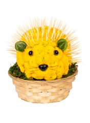

Animale din flori-arici
Livrare in 2-4 ore
-Contine: crizanteme, santini, burete floristic si accesorii.
-Va oferim un simpatic si deosebit aranjament floral realizat din crizanteme si santini pe care il gasiti disponibil pe tot parcursul anului.
-Florile pe care le folosim sunt mereu proaspete. Astfel, în unele cazuri ele pot fi sub formă de boboci. Aceștia se vor deschide în maxim 24 de ore, dacă în încăpere sunt între 23 și 25 de grade Celsius. Persoana care va primi acest produs se poate bucura mult mai mult de prospețimea lui, în acest caz!